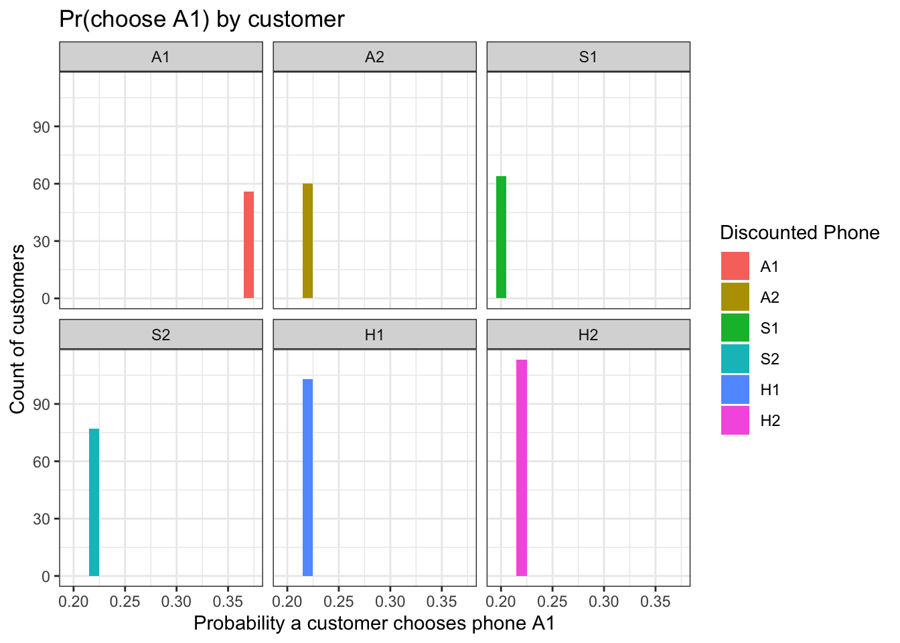

Extending the MNL model from previous project 5 data to include heterogeneity.
Objective
MNL for Heterogenity
Define a function to visualize the probability that a customer will choose a specific phone, separated by different discount levels. We’ll begin by focusing on phone A1.
This visualization aims to highlight the differences in predicted preferences among individual customers. Each plot will have an x-axis displaying the predicted choice probability for the selected phone. Facets will categorize customers who encountered the same pricing conditions, specifically those who saw the same phones on discount.
A histogram will be used to depict the distribution of these choice probabilities among customers. Initially, this distribution might appear uniform in a homogeneous model but will display greater variation as we introduce elements of customer heterogeneity.
The function will be applied sequentially to different phones to observe how the histograms vary when different discounts are applied to different phones.
## Data Importinglibrary(tidyverse)
── Attaching core tidyverse packages ──────────────────────── tidyverse 2.0.0 ──
✔ dplyr 1.1.4 ✔ readr 2.1.5
✔ forcats 1.0.0 ✔ stringr 1.5.1
✔ ggplot2 3.4.4 ✔ tibble 3.2.1
✔ lubridate 1.9.3 ✔ tidyr 1.3.1
✔ purrr 1.0.2
── Conflicts ────────────────────────────────────────── tidyverse_conflicts() ──
✖ dplyr::filter() masks stats::filter()
✖ dplyr::lag() masks stats::lag()
ℹ Use the conflicted package (<http://conflicted.r-lib.org/>) to force all conflicts to become errors
library(mlogit)
Loading required package: dfidx
Attaching package: 'dfidx'
The following object is masked from 'package:stats':
filter
cust_dat <-read_csv("./smartphone_customer_data.csv", show_col_types=F) n <-nrow(cust_dat) phone_dat <-read_csv("./phone_dat.csv",show_col_types=F)load("~/Desktop/MGT100 folder/mnl_datasets.RData")load("~/Desktop/MGT100 folder/mnl_performance_functions.RData") myplot <-function(data, model, phone) { disc_levs <-c("A1", "A2", "S1", "S2", "H1", "H2", "") preds <-as_tibble(predict(model, newdata=data))colnames(preds) <- disc_levs[1:6] temp <- cust_dat |>filter(years_ago ==1) |>mutate(discount =factor(discount, levels = disc_levs)) |>mutate(discount =fct_recode(discount, "None"="")) |>mutate(pr = preds[[phone]]) |>select(discount, pr) p <- temp |>filter(discount !="None") |>ggplot(aes(x=pr)) +geom_histogram(aes(fill=discount), binwidth =0.01) +facet_wrap(. ~ discount) +xlab(paste("Probability a customer chooses phone", phone)) +ylab("Count of customers") +ggtitle(paste0("Pr(choose ",phone,") by customer")) +labs(fill ="Discounted Phone") +theme_bw() print(p)return(invisible(NULL)) }# Calculate market shares # In project 5 I did it, but it's helpful to have these as reference points brand_shares <- cust_dat |>filter(years_ago ==1) |>count(brand) |>mutate(shr = n /sum(n)) brand_shares
# A tibble: 3 × 3
brand n shr
<chr> <int> <dbl>
1 apple 346 0.356
2 huawei 284 0.292
3 samsung 342 0.352
# plot each individual's probability of choosing phone A1myplot(mdat1, out4, "A1")

Illustrations
I am examining the modifications in histograms of choice probabilities for Product A1 as phone discounts fluctuate. Currently, the homogeneous demand model does not reveal any correlation between predicted customer choice shares and their responses to discounts. However, this situation is expected to change.
I plan to enhance the model by introducing heterogeneity. To begin, I will incorporate individual heterogeneity based on customer attributes, specifically through an interaction term between price and usage (minutes). This addition aims to capture the nuanced effects of pricing on different customer segments, enriching the model’s predictive accuracy and relevance.
Add Heterogenity
To introduce heterogeneity into the model, I will integrate an interaction term between “price” and “total minutes” used. This approach is based on the hypothesis that customers who use their phones more extensively may be willing to pay a higher price for their phone services. By including this interaction term, I aim to examine the relationship between phone usage and price sensitivity. A positive coefficient for this interaction would support the hypothesis, indicating that increased usage correlates with a greater willingness to pay, thus adding a layer of individual behavioral variation to the model. This enhancement should provide deeper insights into consumer behavior and improve the model’s ability to predict responses to pricing strategies.
# plot each individual's probability of choosing phone A1myplot(mdat1, out5, "A1")
Summary 1
By incorporating the interaction term between price and total minutes used in our model, we have differentiated the impact of price on the utility derived by different consumers. This adjustment reveals that even among consumers facing the same phone discount, their probabilities of purchase can vary significantly due to their distinct phone usage behaviors.
To clarify, let’s consider the structural transformation of the model component concerning price. Originally, the model might have included separate terms for the effect of price and the interaction of price with minutes used:
Utility=… +(ßprice x price)+(ßint x price x total minutes)+ …
This can be reformulated as:
Utility=… +(ßprice + ßint x total minutes) x price + …
In this formulation ßprice is typically negative, indicating that higher prices generally decrease utility. However, when ßint is positive, it implies that consumers with higher usage (more total minutes) exhibit a less negative—or less sensitive—response to price increases. This is because the addition of ßint* Totalminutets to ßprice reduces the absolute value of the negative price coefficient.
Essentially, this model transformation clarifies that as total minutes increase, the combined coefficient on price approaches zero, indicating a reduction in price sensitivity for high-usage consumers.
Given these theoretical considerations, it is now pertinent to delve into the data to explore how this heterogeneous model predicts consumer choice behavior. By examining the empirical effects of these variables, we can validate the model’s assumptions and refine our understanding of consumer dynamics in the market.
Deeper Dive into the data
I will now undertake a thorough analysis of the data to ascertain how effectively the heterogeneous model forecasts consumer choice behavior. This deep dive is essential to validate the theoretical constructs of the model and to refine our understanding of how consumer attributes, such as phone usage, influence their sensitivity to pricing.
# grab the data for 2 consumers x1 <- sub1 |>filter(customer_id ==9) |>mutate(A2 = phone_id =="A2", S1 = phone_id =="S1", S2 = phone_id =="S2", H1 = phone_id =="H1", H2 = phone_id =="H2",ptm = price * total_minutes) |>select(A2, H1, H2, S1, S2, price, ptm) |>as.matrix() x2 <- sub1 |>filter(customer_id ==13) |>mutate(A2 = phone_id =="A2", S1 = phone_id =="S1", S2 = phone_id =="S2", H1 = phone_id =="H1", H2 = phone_id =="H2",ptm = price * total_minutes) |>select(A2, S1, S2, H1, H2, price, ptm) |>as.matrix()# notice how the interaction variable (ptm) is different for the two consumers x1
# calculate probabilities of purchase for the six phones for each of the two consumers beta_hat <-coef(out5) xb1 <-t(x1 %*% beta_hat) xb2 <-t(x2 %*% beta_hat) example_shares <-rbind(round(exp(xb1) /rowSums(exp(xb1)), 3),round(exp(xb2) /rowSums(exp(xb2)), 3) )colnames(example_shares) <-c("A1", "A2", "S1", "S2", "H1", "H2") example_shares
Observations from the model indicate that the probabilities of purchasing different phones vary significantly between consumers. For instance, I noted that the first consumer has an estimated 30.5% probability of purchasing the small Apple phone (A1), while this probability drops to 17.7% for the second consumer. In contrast, the second consumer shows a 47.0% probability of purchasing the small Huawei phone (H1), compared to only an 8.9% probability for the first consumer.
This discrepancy can be attributed to the differences in phone usage between the two consumers. The second consumer, who uses their phone substantially less than the first, is predicted by the model to be more sensitive to price. This increased price sensitivity leads the second consumer to prefer the more affordable H1 phone over the more expensive A1 phone.
With these insights, I will now return to refining the modeling process…
Add Heterogeneity Via a Segment Interactions
# compare brand-dummy only model before/after adding segments out1 <-mlogit(choice ~ apple + samsung |0, data=mdat1)summary(out1)
In examining the coefficients between models 1 and 6, I observed notable variations. Initially, in model 1, the coefficient for Apple was 0.197. However, when I introduced interactions between Apple and segment dummies, the coefficients adjusted to -0.06, 0.007, and 0.49 respectively. The original value of 0.197 seems to act as a weighted average of these new segment-specific coefficients, providing a broader, albeit less detailed, perspective.
With this refined model, more nuanced insights emerge: relative to consumers preferring Huawei phones (the baseline), consumers in segment 1 exhibit a decreased preference for Apple phones, those in segment 2 show a slight increase in preference, and segment 3 consumers demonstrate a significantly heightened preference for Apple. This granularity allows for a deeper understanding of brand preferences across different consumer segments.
Brand-Dummy and Price Models
# compare brand-dummy + price model before/after adding segments out2 <-mlogit(choice ~ apple + samsung + price |0, data=mdat1)summary(out2)
I will now concentrate on price sensitivity. By incorporating segment-specific price variables into the model, I am able to estimate distinct price sensitivities for each consumer segment. From this analysis, it is evident that consumers in segment 1 exhibit greater price sensitivity, whereas those in segment 2 demonstrate a lesser sensitivity to price changes. This differentiation allows for a more nuanced understanding of how price impacts different groups within the market.
Last project(5), I observed that including screen size in a model that already accounts for brand and price does not significantly enhance the model’s performance. This observation is supported by the statistical insignificance of the screen size coefficients and the very marginal changes in hit rates and likelihood ratios. These results suggest that screen size, within the context of this model, may not be a decisive factor in predicting consumer choices as compared to brand and price.
Building a Model with Segment-Specific and Individual-Specific Heterogeneity
#Construct a model with both segment-specific and individual-specific heterogeneity out9 <-mlogit(choice ~ apple:segment + samsung:segment + price:segment + screen_size:segment + price:total_minutes:segment |0, data=mdat1)summary(out9)
# plot each individual's probability of choosing phone A1 or S2myplot(mdat1, out9, "A1")
myplot(mdat1, out9, "S2")
Summary 6
Concerns about overfitting are paramount, as they could diminish our model’s predictive accuracy. To address this, I propose selecting a model through the method of 10-fold cross-validation. This technique will enable a rigorous evaluation of the model’s performance across multiple subsets of the data, providing a more robust indication of its generalizability. Furthermore, I will focus on the mean squared prediction error (MSPE) as a key metric for assessing the accuracy of our predictions. This systematic approach ensures that we adopt a model not just tailored to fit the training data but also capable of delivering reliable predictions on new, unseen data.
Which models predict better?
cv_mspe <-function(model, data, k=10, seed=4321) {# control psuedo random numbersset.seed(seed)# randomly assign each customer (J rows) to one of k folds N <-length(unique(data$customer_id)) # number of customers J <-length(unique(data$phone_id)) # number of products fold <-rep((1:N) %% k +1, each=J) # rep replicates list elements# %% is a modulus element, so what we're doing here is computing the remainder when# dividing 1:N by (k+1). So mod(customer_id,10)+1 is always an integer between 1# and 10. We repeat that 6 times for each customer, to match the mdat1 observations# preallocate the prediction storage preds <-vector(length=nrow(data)) # loop over folds for(i in1:k) {# create row indices for training & prediction observations row_ids_train <- fold != i # which rows to keep in for training row_ids_test <-!row_ids_train # which rows to hold out for prediction# fit/train model on training data out <-mlogit(formula(model), data=data[row_ids_train,])# predict choice probabilities for prediction data yhat <-predict(model, newdata = data[row_ids_test,])# store yhat values for prediction data preds[row_ids_test] <-as.vector(t(yhat)) }# calculate mse mspe <-mean((data$choice - preds)^2)return(mspe) }# calculate the MSE's for each model mspe <-vector(length=9) mspe[1] <-cv_mspe(out1, mdat1) mspe[2] <-cv_mspe(out2, mdat1) mspe[3] <-cv_mspe(out3, mdat1) mspe[4] <-cv_mspe(out4, mdat1) mspe[5] <-cv_mspe(out5, mdat1) mspe[6] <-cv_mspe(out6, mdat1) mspe[7] <-cv_mspe(out7, mdat1) mspe[8] <-cv_mspe(out8, mdat1) mspe[9] <-cv_mspe(out9, mdat1)# plot the MSE's to compare themtibble(mod_id=1:9, mspe=mspe) |>ggplot(aes(x=mod_id, y=mspe)) +geom_point() +geom_line()
ylim(c(0, .14)) # adjustment to show the abs differences
# that adjustment helps to show why mspe is only 1 factor among several when # choosing a model specification# which model has the lowest cross-validated mean-squared-error?which.min(mspe)
[1] 9
Summary 7
This model, referred to as “out9,” has demonstrated the most robust performance based on our criteria, which include the hit rate and the log-likelihood ratio index. Furthermore, it effectively incorporates segment-level heterogeneity, enriching its analytical depth. I will utilize this specific model configuration for the subsequent two projects, and further exploring its capabilities and shows more variety predictive power within various consumer segments.